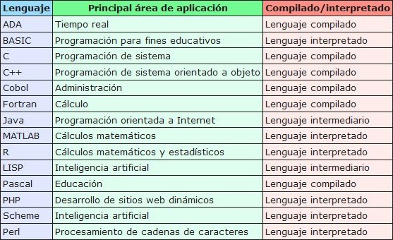

Lenguajes de programación
Piensa en una receta de cocina, ésta puede ser expresada en castellano, inglés o francés, podría ser cocinada en fogón o vitrocerámica, por un cocinero o más, etc.
Pero independientemente de todas estas circunstancias, el plato se preparará siguiendo los mismos pasos.
La diferencia fundamental entre algoritmo y programa es que, en el segundo, los pasos que permiten resolver el problema, deben escribirse en un determinado lenguaje de programación para que puedan ser ejecutados en el ordenador y así obtener la solución.
¿Qué son los lenguajes de programación?
Los lenguajes de programación son sólo un medio para expresar el algoritmo y el ordenador pueda ejecutarlo ejecutarlo.
Un programa es un conjunto de instrucciones ordenadas secuencialmente que permiten a un ordenador interpretar una información de entrada, procesarla y producir una información de salida.
Clasificación
Existen muchos lenguajes de programación y también muchos criterios para clasificarlos. El que vamos a utilizar se basa en el criterio de abstracción, ya que es la clasificación más habitual.
Por tanto, podemos tener dos tipos de lenguajes de programación:
- Lenguajes de bajo nivel: código máquina y ensamblador. Son lenguajes próximos al lenguaje que entiende el ordenador. No se utilizan pues dependen mucho del ordenador donde se va a ejecutar. Son difíciles de utilizar.
- Lenguajes de alto nivel: 1ª generación, 2ª generación, evolución de la 2ª generación
- 3ª generación y 4ª generación. La gran ventaja de los lenguajes de alto nivel es que consiguen distanciarse del lenguaje máquina y se aproximan allenguaje natural. Uno de los mayores problemas de estos lenguajes es lacantidad de ellos que existen y las nuevas versiones que aparecencontinuamente.

Obra publicada con Licencia Creative Commons Reconocimiento 4.0